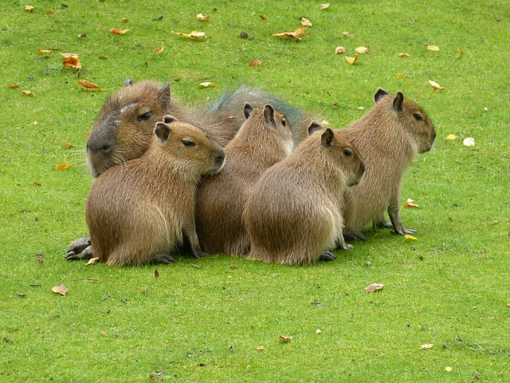

Capibaras
El capibara, chigüiro o carpincho (Hydrochoerus hydrochaeris)nota es una especie de roedor de la familia de los cávidos, nativa de Sudamérica. Es el roedor viviente de mayor tamaño y peso del mundo. El otro miembro existente de ese género es el capibara menor (Hydrochoerus isthmius). Sus parientes cercanos incluyen a los conejillos de indias y los mocós, y está relacionado más lejanamente con el agutí, la chinchilla y el coipo. Habita humedales y bosques densos y vive cerca de cuerpos de agua. Es una especie muy social y se puede encontrar en grupos de hasta cien individuos, pero por lo general vive en grupos de diez a veinte individuos. El animal es cazado por su carne, piel (para indumentaria) y por la grasa contenida en su piel.